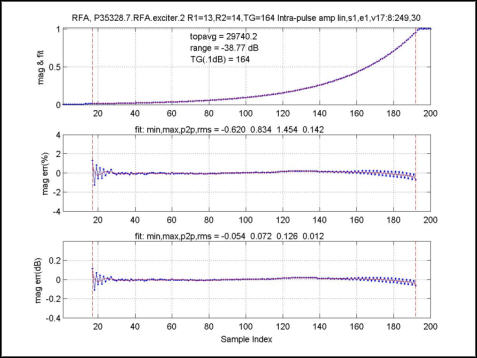

Plot title: none; mag & fit vs sample index; Ideal: Perfect exponential of blue points with overlaid red exponential curve fit.
Plot title: none; mag err(%) vs sample index; Ideal: Flat horizontal blue line of processed points with overlaid flat red curve fit, both at mag err(%) = 0.0 %.
Plot title: none; mag err(dB) vs sample index; Ideal: Flat horizontal blue line of processed points with overlaid flat red curve fit, both at mag err(dB) = 0.0 dB.
Illustration 26: Magfit, or Intra-pulse amp lin (All)
